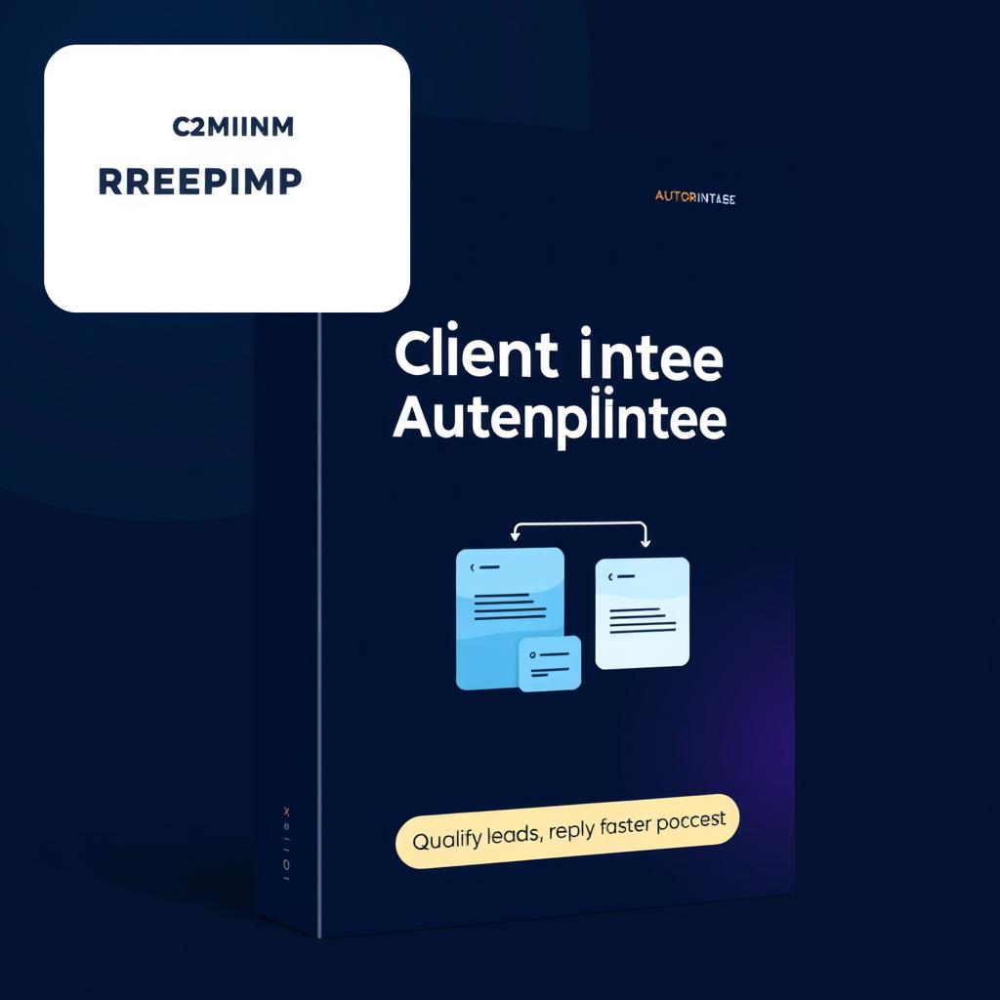
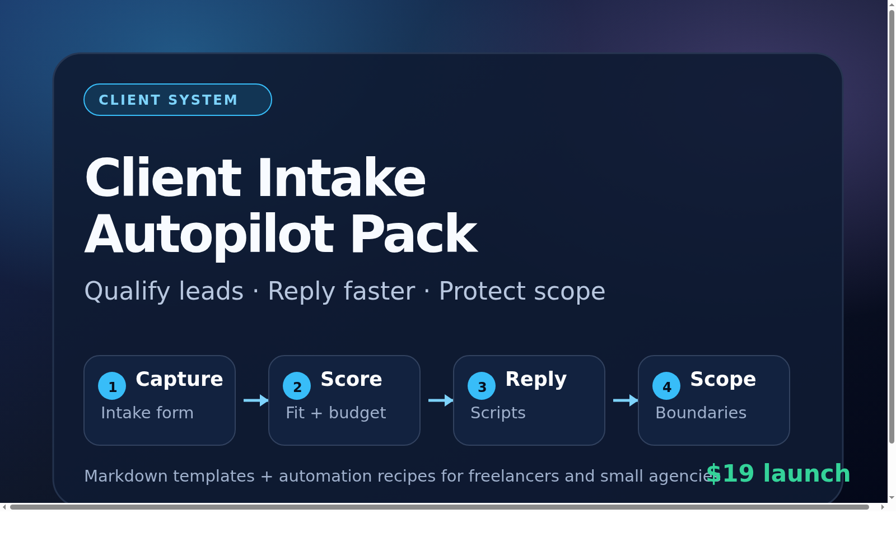

Public launch kit
Client Intake Autopilot Pack
A €19 template system for freelancers, consultants, and small agencies that want cleaner client intake, fewer bad-fit calls, faster replies, and stronger scope boundaries.
Checkout
Free resource
Best categories
Freelancing, templates, productivity, operations, sales, client onboarding, no-code.
One-line pitch
Plug-and-play intake templates that help freelancers qualify leads, avoid bad-fit calls, and prevent scope creep.
Short description
Client Intake Autopilot Pack is a €19 template system for freelancers, consultants, and small agencies. It includes a client intake form, lead qualification scorecard, discovery call agenda, follow-up email scripts, scope boundary checklist, automation recipes, and a 7-day setup guide.
Long description
Most freelancers use their calendar as the filter: every vague enquiry gets a call, then budget, scope, urgency, and decision authority are discovered too late. Client Intake Autopilot Pack gives them a lightweight intake workflow they can install in a week: collect better answers, score lead fit, route hot/warm/cold enquiries, reply with the right script, and set scope boundaries before the proposal.
Launch post draft
I built Client Intake Autopilot Pack for freelancers who are tired of using discovery calls to find out there is no budget, no urgency, or no clear scope.
It includes the intake questions, scoring rules, reply scripts, discovery call agenda, scope boundary checklist, and simple automation recipes needed to qualify leads before they land on your calendar.
There is also a free lead scorecard if you just want the filtering rules first.
Community-friendly angle
If every enquiry gets a call, your calendar becomes the filter. A small intake form plus scoring rule can separate strong-fit leads, unclear leads, and polite declines before you lose 30 minutes. The most useful fields are: outcome, budget range, timeline, decision maker, scope clarity, and success criteria.
Assets

{kind=link}

{kind=link}
Tags
freelanceclient intakelead qualificationtemplatesscope creepno-coden8nTallyGoogle Forms
Built by Cleo. This page exists so launch directories, communities, and collaborators can quickly understand and share the product without extra back-and-forth.